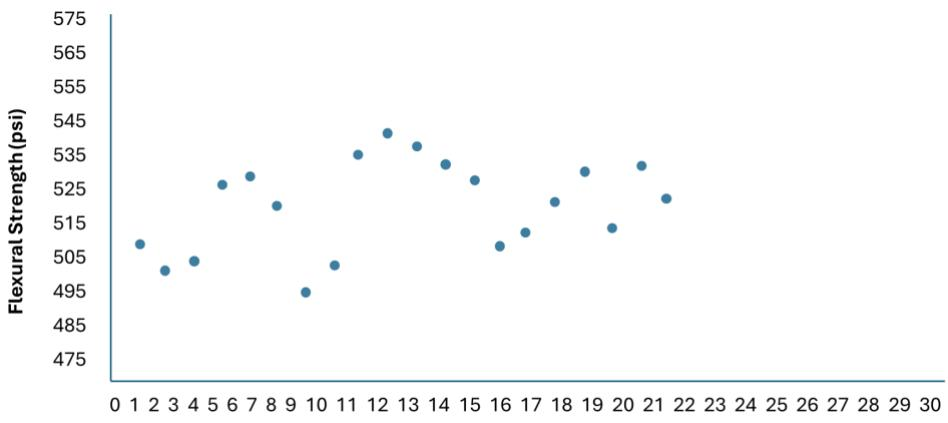
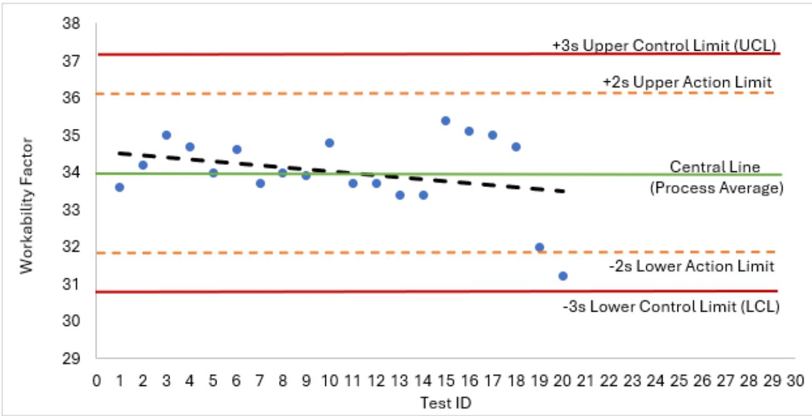
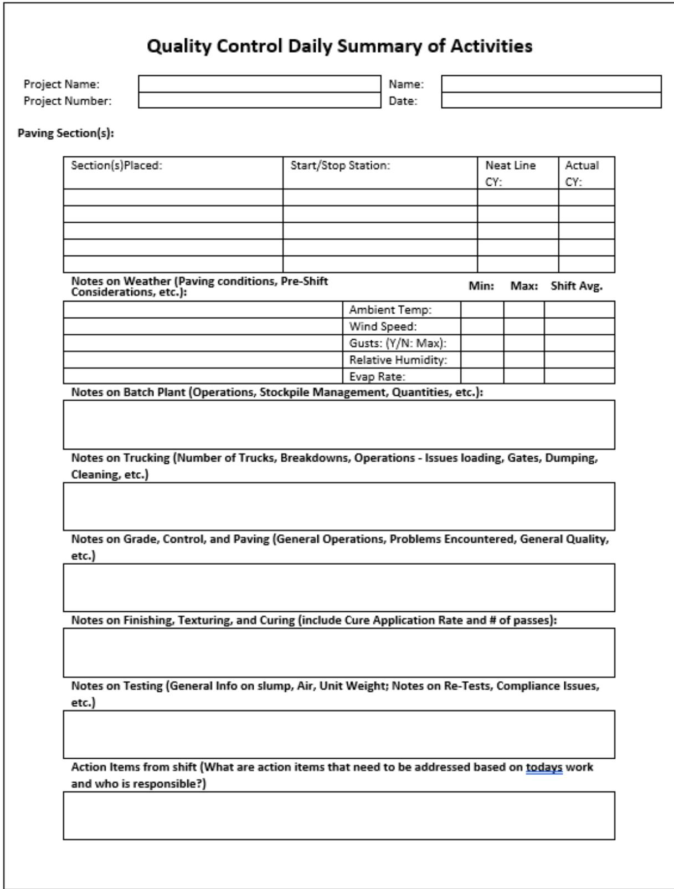
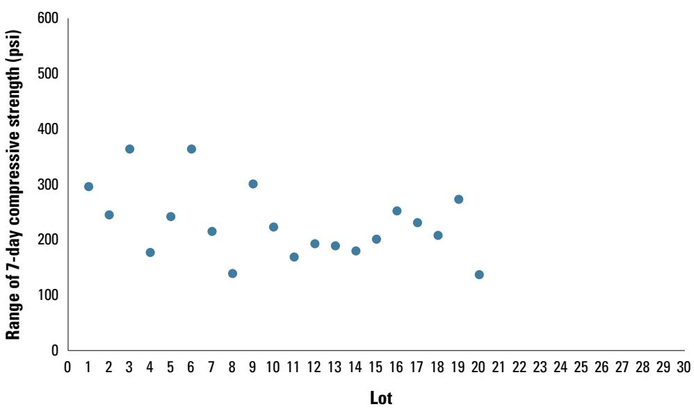

Data-Driven Quality Control in Construction
Data‑driven quality control in construction is a systematic program that continuously monitors a broad set of material, process, environmental and administrative characteristics—ranging from raw‑material strength, moisture content, and air content to fresh‑mix properties, placement actions, and hardened‑concrete performance metrics—using calibrated equipment, qualified personnel, and real‑time sensors[1][4]. The captured quantitative and qualitative information is entered on checklists or electronic datasheets and plotted on statistical run or control charts whose upper and lower limits are set three standard deviations from the mean; any observation beyond these limits or any statistically defined pattern (e.g., consecutive points trending upward) automatically triggers investigation, corrective action, or a production halt[1][2][4][5]. By linking each sample to its precise location, time and conditions and archiving the data for all stakeholders, the approach provides verifiable evidence that specifications are met, out‑of‑spec work is prevented, and long‑term performance can be assessed[1][2][4].
Sources (5)
Purpose and quality objectives
Data‑driven quality control evaluates a comprehensive set of material, process, workmanship and performance characteristics throughout concrete paving projects. The guides indicate that any measurable variable—such as raw‑material strength, ductility, porosity, moisture content, or the fresh‑mix unit weight, entrained air content and SAM number—is tracked on statistical tools: “Statistical control charts are useful tools for analyzing changes in materials and the paving process” and “Practically any variable that is measured in concrete paving can be plotted on a control chart.” Fresh‑concrete properties monitored include temperature, slump, air content, reinforcement size/spacing/cover, joint preparation, water and curing‑compound additions, saw‑cut timing, and batch‑plant details. Real‑time sensor data are used to capture “real‑time smoothness,” material moisture levels (“sensors used for material moisture content”), and “vibration monitoring systems.” The system also records workmanship outcomes such as the visual severity of pavement distress (“low, medium, or high severity pavement distress”), surface smoothness, and reinforcement verification (“The inspector is prompted to confirm that the reinforcing steel … is the proper size and spacing, with the appropriate cover, overlapping, and concrete vibration provided”). Hardened‑concrete performance metrics—compressive strength, flexural strength and surface resistivity—are plotted on run or control charts: “Measurements of hardened concrete properties such as compressive strength, flexural strength, and surface resistivity are also often used in run charts and control charts to assess quality.” Control limits are defined by upper and lower bounds placed three standard deviations from the mean (“The solid red horizontal lines are the upper and lower control limits and are placed three standard deviations away on each side of the mean”), with “action and suspension limits for fresh concrete tests …” triggering immediate corrective actions. Data collection is supported by extensive checklists and datasheets that capture both qualitative and quantitative information: “Checklists and datasheets are extensively used in airport pavement construction to collect both qualitative and quantitative data…” and when paired they become “checksheets or datasheets.” Finally, specific performance characteristics such as air‑content variability are evaluated using statistical measures like the coefficient of variation (“coefficient of variation is used in this analysis so that a fair comparison of variability can be made between data sets with different average values”). [1][2][4][5]
The following figure illustrates an example of water-to-cement ratio quality control test data alongside corresponding concrete temperatures to demonstrate these statistical tracking methods in practice.
 Example w/cm QC test data with corresponding concrete temperatures plotted on a control chart. [5]
Example w/cm QC test data with corresponding concrete temperatures plotted on a control chart. [5]
The figure displays a statistical run or control chart tracking the microwave water-to-cement (w/cm) ratio and concrete temperature across sequential sample IDs. The chart demonstrates that capturing quantitative information allows for the detection of trends, such as rising temperatures, which can trigger corrective actions like adding chilled water to maintain specifications.
[1] — Ch. 9 (pp. 265–266); [2] — Ch. 3 (pp. 98–107), Ch. 6 (pp. 297–306); [4] — Ch. 2 (pp. 26–28), Ch. 6 (pp. 87–104); [5] — Ch. 5 (pp. 36–39)
Data‑driven quality control in construction is employed to guarantee that the finished product meets its required specifications by continuously monitoring material and process characteristics, detecting any deviation from expected performance, and enabling timely corrective actions. The approach relies on systematic collection, linkage, archiving, and communication of quantitative and qualitative test data so that conformance can be judged, out‑of‑specification work prevented, and a traceable record maintained for future analysis. Statistical tools such as run or control charts with three‑sigma limits are used to distinguish normal variation from assignable‑cause variation; when results exceed defined action or control limits, the system triggers investigation and adjustment of mix proportions, placement methods, or other process parameters. By ensuring that all quality‑related information is reliably recorded and shared with contractors, agency personnel, suppliers, and other stakeholders, data‑driven QC provides evidence that policies and procedures have been followed and supports continuous improvement. [1][2][4][5]
The following figure illustrates how contractor quality control and process control activities are integrated with quality assurance and acceptance procedures.
 Integration of contractor QC and process control activities with QA and acceptance. [2]
Integration of contractor QC and process control activities with QA and acceptance. [2]
The figure illustrates a workflow where pavement placement (P) is followed by testing and inspection (I), which feeds into an analytics dashboard for data-driven process control. If the pavement does not meet required quality parameters, it is marked as deficient (D) and sent back for rework or removal; otherwise, it proceeds to success evaluation (E) and acceptance (A).
[1] — Ch. 9 (pp. 265–266); [2] — Ch. 3 (pp. 98–107), Ch. 5 (p. 290), Ch. 6 (pp. 296–333), App. A (p. 368); [4] — Ch. 2 (pp. 21–28), Ch. 6 (pp. 87–104), App. D (p. 133); [5] — Ch. 5 (pp. 36–39)
Scope and applicability
Data‑driven quality control can be applied to any construction material or component that shows measurable variability. The guides note that “Practically any variable that is measured in concrete paving can be plotted on a control chart.” This includes raw concrete mixes, as well as other raw materials whose properties vary: “Material variability is a function of variations in the raw materials, including their composition and properties such as strength, ductility, porosity, moisture content, and many other natural characteristics or characteristics imparted by the production process.” The approach extends beyond on‑site concrete to off‑site fabricated items – “Fabricated structural materials are manufactured off‑site, often in a controlled manufacturing environment. These types of materials include steel or precast concrete structural members, precast concrete pavement slabs, and other load‑bearing assemblies” – and to standard manufactured parts such as dowel bars: “Standard manufactured materials … Examples include dowel bars, backer rods, and precast concrete drainage components.” It is explicitly referenced for “portland cement concrete paving projects,” but the same principles apply to asphalt, granular bases, lean concrete, and any other material that can be sampled.
Process‑level applicability covers every phase of pavement work. The manuals describe “Activities and information flows that occur during concrete production,” “Activities and information flows that occur during paving,” and “Activities and information flows that occur after paving to support testing and reporting.” Pre‑placement checks evaluate grade, plant, equipment, and weather conditions: “Pre‑placement – supports an evaluation of the readiness of the grade, plant, equipment, and provisions for hot, cold, dry, windy, and rainy weather.” During placement, data such as “air and concrete temperatures, the time fresh concrete measurements were taken, truck numbers from which samples were taken, and specimen IDs” are recorded. Joint work is guided by information on “the condition of the dowel bars and base condition” and “guides the inspector regarding the size, spacing, placement, and greasing of the joints.” Reinforcement, curing compounds, saw‑cutting, finishing, and other operations are similarly captured.
The tools used to capture data include “Process diagrams, also known as flowcharts, are a graphical tool useful to display or describe the movement of material or information through a process or system,” which can be linked to performance metrics: “Process diagrams can also be linked to qualitative or quantitative data associated with each step, such as test methods, performance targets, measurements, and other information supporting quality acceptance.” “Checklists and datasheets are extensively used in airport pavement construction to collect both qualitative and quantitative data from activities such as materials testing, inspection, acceptance, and payment activities,” and they may be customized: “This particular checklist could be used regularly by personnel inspecting concrete pavements work, but also tailored to meet site-specific and/or project specific conditions that may be important to monitor and ensure are addressed.” Sampling plans may be based on lot size, volume, or linear footage: “A sampling plan is often based on (1) lots of material produced, (2) a volumetric quantity of material produced, or (3) a number of linear feet or square yards of material placed.”
Statistical monitoring uses control and run charts for fresh and hardened concrete properties: “For concrete, charts can be prepared for measurements of both fresh and hardened concrete properties.” Typical indicators include “Measurements such as unit weight, air content, and SAM number provide good quality indicators for monitoring fresh concrete properties over time.” When data points exceed statistical limits – “Any one point is outside of the control limits (more than three standard deviations from the average)” – or when patterns emerge, the process must be investigated: “Once an out‑of‑control condition is identified using these criteria, the process must be analyzed to determine the cause of the variability and appropriate action must be taken to correct the process.” Action thresholds are defined, for example: “If two consecutive slump or air tests fall outside of the action limit, the QA personnel is to direct the contractor to halt production.”
Historical project data support refinement of limits. The guides explain that “coefficient of variation is used in this analysis so that a fair comparison of variability can be made between data sets with different average values” and that “The standard deviations and coefficients of variation listed in table 5.5 can be used as a starting point for establishing upper and lower control limits (3s and -3s) by using a target value (average) that is appropriate for the project mixture proportions and placement conditions.” Records of changes in materials, personnel, equipment, or weather – “Records pertaining to changes in materials, personnel, equipment, or weather can provide clues to the assignable causes” – are retained for ongoing improvement.
Thus, data‑driven quality control applies to concrete (including Portland‑cement mixes), asphalt, granular bases, lean concrete, fabricated steel and precast concrete elements, standard manufactured components such as dowel bars, and any associated processes from material production through placement, joint preparation, curing, finishing, testing, and post‑construction reporting under a wide range of site and weather conditions. [1][2][4][5]
[1] — Ch. 9 (pp. 265–266); [2] — Ch. 3 (pp. 99–107), Ch. 5 (p. 290), Ch. 6 (pp. 296–306); [4] — Ch. 2 (pp. 26–28), Ch. 6 (pp. 86–104); [5] — Ch. 5 (pp. 36–39)
Data‑driven quality control is mandated whenever agency or contract specifications require a Concrete Quality Control Plan (CQCP) that directs personnel to record, store, share and use QC data for each paving step. Contractors must include records‑management provisions in their QC programs to satisfy retention, archiving and disposal rules, while retaining additional process‑control data beyond the project is only permissible when agency specifications or contract terms allow it. The approach becomes impractical if the contractor lacks sufficient manpower, technology, storage infrastructure, or time to support the required documentation and internal auditing. Consequently, the main limitations are resource availability and compliance with agency‑defined retention schedules. [2]
[2] — Ch. 5 (p. 290)
Test methods and procedures
Across the guides, valid data‑driven quality control depends on three interrelated controls: calibrated equipment, qualified operators, and managed environmental conditions. The guides state that “Valid data‑driven quality control in construction requires that all measurement equipment be properly calibrated and maintained, that testing personnel be trained, certified, and consistently assigned to the same tasks, and that environmental conditions such as temperature, humidity and exposure be monitored or controlled where possible.” They also note that variability can arise when equipment “is not operating properly, is damaged, is not utilized correctly, or is not calibrated.” To limit skill‑related variation, they require “trained or certified testing personnel … consistently assigned to the same tasks,” and emphasize that “inexperienced or unqualified staff should not be allowed to use these tools.” Environmental factors must be monitored; one guide requires “recording environmental factors such as weather” and specifies that the work area “is free of standing water and debris,” while also tracking when “concrete temperatures outside of the acceptable placement temperatures” occur and enforcing “limiting the time between batching and placement.” Additional guidance lists “temperature, humidity, precipitation, exposure to light, and other ambient conditions” as variables to be monitored or controlled. Together these practices keep equipment‑related and operator‑related variability low and ensure that reported variation remains well below overall process variability. [2][4]
[2] — Ch. 3 (pp. 104–107); [4] — Ch. 2 (pp. 26–28)
Sampling and testing frequency
The guides describe a data‑driven QC sampling plan that is first defined for each quality characteristic by deciding how many samples will be taken, how many measurements each sample will yield, and how often testing will occur. The plan is sized to give confidence that the results represent all work while remaining practical for field crews. Sampling units are typically tied to a production lot, a measured volume of material, or an area such as linear feet or square yards, with sub‑lots used when finer granularity is needed. Locations are assigned randomly—often using a random number generator—to specific lots or sub‑lots to avoid bias, and each location is documented so results can be linked back to the exact pavement segment. The quantity of replicate specimens is limited by logistical constraints; only two or three specimens are usually practical. Frequency and overall testing cadence are balanced against project complexity, resource limits, test turnaround time, personnel safety, the impact of destructive tests on construction progress, and the risk associated with waiting for results, ensuring that sampling provides timely knowledge to prevent out‑of‑specification work rather than merely “checking a box.” [2][4]
[2] — Ch. 3 (pp. 98–99); [4] — Ch. 6 (pp. 93–95)
Samples must be chosen according to a documented sampling plan that specifies how many samples, how many measurements per sample, and how often testing occurs. The plan should draw samples randomly from material lots, defined volumes, or measured lengths/areas—sub‑lots may also be used—to ensure the data reflect the entire batch or placed pavement. Practical factors such as test turnaround time, personnel safety, any destructive impact on construction, and the risk of work proceeding while results are pending must be balanced so that sampling frequency provides confidence without unduly burdening production. [4]
The figure below illustrates the concept of random sampling within this framework.
 Random sampling of material lots over time. [4]
Random sampling of material lots over time. [4]
The figure illustrates a random sampling method where specimens are selected from different points within production lots rather than being taken sequentially.
[4] — Ch. 6 (pp. 93–95)
Acceptance criteria and tolerances
Data‑driven quality control determines acceptability through a hierarchy of numerical limits, statistical pattern rules, and visual/physical checks.
Numerical limits – Results must remain inside the statistically defined control envelope. The guides require “upper and lower control limits (3s and -3s)” and describe this as “establishing control limits three standard deviations (3σ) greater than or less than the average of the data set”. Any observation that is “Any one point is outside of the control limits (more than three standard deviations from the average)” triggers a non‑acceptable condition. Early‑warning thresholds may be applied: “action limits that signal that a process is trending in a certain direction of concern may be warranted for a single data point and could be established at values such as ±2σ or ±2.5σ”. When ten stable observations are available, the envelope is refreshed: “control limits should be revised as soon as 10 data points can be collected during construction while the process is stable”.
Statistical pattern criteria – Acceptability is lost when any of the following run‑chart patterns appear: - “Nine points in a row are on the same side of the mean”; - “Six points in a row are all increasing or all decreasing” (also stated as “Six consecutive test results are increasing or decreasing.”); - “Four out of five points are more than one standard deviation from the mean (and on the same side of the mean)”; - “Two of three measurements are more than two standard deviations from the central line.”; - “Eight consecutive test results are more than one standard deviation from the center line.”; - A single out‑of‑control point: “Measurement variability is likely attributable to an assignable cause (indicating an issue in the process) if even a single data point falls outside of statistically computed control limits.”
If “the variation is outside the contractor’s defined limits for corrective action”, the batch is rejected.
Variability and normalization – The overall inspection variability must be low: “reported variability should be less than 1/10 of the variability of the other sources combined”. Comparisons across mixes use the “coefficient of variation is used in this analysis so that a fair comparison of variability can be made between data sets with different average values”.
Visual and physical standards – On a run chart, “upper and lower limit lines can be established as the specification limits for the process under consideration” and all points must stay within those limits. A quartile chart provides a visual check where “50% of the test values fall between the upper and lower quartiles”. Concrete‑specific thresholds are also enforced: if “the slump or air test falls outside of the suspension limit, the QA personnel is to direct the contractor to halt production”, and if “If two consecutive slump or air tests fall outside of the action limit, the QA personnel is to direct the contractor to halt production”. Production must stop when “concrete temperatures outside of the acceptable placement temperatures” or when “concrete with visible issues such as segregation and early stiffening”. Agencies align limits with specifications: “Agencies typically establish the suspension limits for a process at the specification limits”.
Air‑content/unit‑weight relationships are monitored visually: “Measured values of air content and/or unit weight that fall unacceptably far from the computed relationship should raise concern.” Values below the expected line are flagged: “Values that fall below the relationship line in the graph are of particular concern because in those cases the measured unit weight is below what would be expected based upon the measured air content.” When tolerances permit, “the absolute value of the difference between the measured and design values of air content and/or unit weight could be used to help establish action limits.”
Any breach of these numerical, statistical, or visual criteria mandates corrective action before the work can be deemed acceptable. [1][2][4][5]
[1] — Ch. 9 (pp. 265–266); [2] — Ch. 3 (pp. 104–107); [4] — Ch. 2 (pp. 26–28), Ch. 6 (pp. 93–103); [5] — Ch. 5 (pp. 36–39)
The guides describe a data‑driven QC system that evaluates each test result on a statistical chart. A central or target line—“the green horizontal line represents the mean of the test results” and “On a run chart, the central line is established as a selected value, such as a specification target”—provides the lot average. Individual measurements are judged acceptable when they lie within the upper and lower specification or control limits; a point that is “Any one point is outside of the control limits (more than three standard deviations from the average)” or breaches “action and suspension limits for fresh concrete tests” triggers immediate corrective action, including halting production if a “if the slump or air test falls outside of the suspension limit, the QA personnel is to direct the contractor to halt production” or if “If two consecutive slump or air tests fall outside of the action limit, the QA personnel is to direct the contractor to halt production.” Control limits are typically set at ±3σ (“establishing control limits three standard deviations (3σ) greater than or less than the average of the data set”) with tighter “action limits… such as ±2σ” to flag early drift. Variability is monitored through the spread of points relative to the one‑ and two‑sigma bands (“The dashed horizontal lines are drawn at intervals of one and two times the standard deviation on both sides of the mean”), by tracking the coefficient of variation (“The coefficient of variation is used in this analysis so that a fair comparison of variability can be made between data sets with different average values”) and by applying pattern rules such as “Six consecutive test results are increasing or decreasing.” When an out‑of‑control point or pattern appears, the process is investigated and corrective measures are applied to bring the lot average back within the specification envelope. [1][2][4][5]
The following figure illustrates typical control chart limits used in FAA and DOD projects to visualize these statistical boundaries.
 Typical control chart limits for FAA and DOD projects. [2]
Typical control chart limits for FAA and DOD projects. [2]
The figure displays a schematic of a statistical run or control chart used in quality management, featuring a central green line representing the process average or target value. It illustrates the hierarchy of limits where action and suspension boundaries are positioned between the specification limits and the central mean to monitor assignable cause variation. The chart visually demonstrates how tighter action and suspension limits serve as early warning systems before measurements breach the outer specification boundaries.
[1] — Ch. 9 (pp. 265–266); [2] — Ch. 3 (pp. 104–107); [4] — Ch. 6 (pp. 93–100); [5] — Ch. 5 (pp. 36–39)
Quality control and process monitoring
The data‑driven quality‑control program continuously monitors a broad set of material, process, environmental and administrative characteristics throughout production and construction.
Material characteristics span raw‑material composition and properties – “strength, ductility, porosity, moisture content, and many other natural characteristics or characteristics imparted by the production process” – as well as specific mix attributes such as “unit weight, air content, and SAM number” that serve as fresh‑concrete quality indicators. Moisture levels are tracked both in aggregates (“material moisture content”) and in the overall mix, while surface qualities are captured through “real-time smoothness”. Vibration generated during placement is observed with “vibration monitoring systems”, and visual distress is rated by “low, medium, or high severity pavement distress”. Within a single unit, variations such as “dimensions, color, or hardness” are also recorded.
Process‑related factors include equipment condition and operator performance (“Process variability is the result of variation induced by equipment, operators, or the environment”), calibration status, and on‑site actions such as reinforcement size, spacing, cover, vibration, water addition, curing compound application and saw‑cutting times. Temperature data are logged for both air and concrete (“air and concrete temperatures, the time fresh concrete measurements were taken, truck numbers from which samples were taken, and specimen IDs”), together with “date and time, weather conditions, site personnel present and sublot(s) being constructed.” The condition of dowel bars and base preparation is noted (“condition of the dowel bars and base condition.”), as are plant‑grade readiness and prevailing weather provisions (hot, cold, dry, windy, rainy). Records also capture “Production – documents all actions and data associated with the placement, including activities that occur as planned, as well as issues encountered and corrective actions”, “Testing – records all relevant information from the paving operations, including concrete mixture ID, fresh properties, concrete and ambient temperatures, samples tested, test specimen prepared, initial curing information, and test results.”, and “Finishing – documents the finishing process, including activities that occur as planned, as well as issues encountered and corrective actions.”
Environmental and administrative data are systematically archived; “Records pertaining to changes in materials, personnel, equipment, or weather can provide clues to the assignable causes that are negatively affecting a process and should be adequately maintained.” Each sample is linked to its origin with “Consistent and clear labeling/identification of samples” and an “Accurate sample location (centerline survey station) and/or time of sampling”, enabling trend analysis across locations and times.
Statistical monitoring relies on control‑chart techniques. The guides state that “Practically any variable that is measured in concrete paving can be plotted on a control chart.” Patterns such as “Six consecutive test results are increasing or decreasing” or “a single data point falls outside of statistically computed control limits” trigger investigations, and “Adjustments should be made as necessary to address assignable cause variation”. Relationships between measurements are exploited – for example, “The fresh concrete measurements of unit weight and air content are related: as the entrained air content of concrete increases, the unit weight decreases,” and if measured values deviate from this expected relationship, “Measured values of air content and/or unit weight that fall unacceptably far from the computed relationship should raise concern.” Pairs such as “Air content and SAM number”, “Microwave w/cm ratio and unit weight”, “Compressive strength and surface resistivity” may be displayed together. Hardened‑concrete performance is tracked through “compressive strength, flexural strength, and surface resistivity”. Variability of air content is quantified using the coefficient of variation: “The coefficient of variation is used in this analysis so that a fair comparison of variability can be made between data sets with different average values,” and control limits are set using standard deviations and coefficients of variation as described: “The standard deviations and coefficients of variation listed in table 5.5 can be used as a starting point for establishing upper and lower control limits (3s and -3s) by using a target value (average) that is appropriate for the project mixture proportions and placement conditions.”
When quality thresholds are breached, predefined response actions are enacted. The program includes “A plan to respond to trends reported by the data”, and specific triggers such as “If two consecutive slump or air tests fall outside of the action limit, the QA personnel is to direct the contractor to halt production.” This structured approach ensures that deviations are identified promptly and corrective measures applied to maintain consistent construction quality.
“Run charts and control charts allow visualization of data trends.” [1][2][4][5]
The figure below illustrates a run chart tracking the flexural strength of a concrete mixture.

Run chart (or strip chart) for the flexural strength of a concrete mixture. [2]The figure displays a run chart plotting discrete data points representing flexural strength measurements over a sequence of observations. This visualization serves as an essential process improvement tool that enables contractors to understand the variability within a process and discernible trends over time. By plotting these measurements on a statistical run chart, the data provides verifiable evidence of material performance metrics used in quality control.
[1] — Ch. 9 (pp. 265–266); [2] — Ch. 3 (pp. 98–107), Ch. 6 (pp. 297–306); [4] — Ch. 2 (pp. 26–28), Ch. 6 (pp. 93–104); [5] — Ch. 5 (pp. 36–39)
Under a data‑driven quality‑control program, any measurement that breaches statistical control limits or exhibits assignable‑cause patterns must trigger immediate investigation and corrective action. The guides agree that “Any one point is outside of the control limits (more than three standard deviations from the average)” signals an out‑of‑control condition; similarly, “If a measurement is greater than +3σ or less than -3σ from the average measurement, it is most likely due to assignable cause variation.” Run‑chart and control‑chart rules cited across sources also require response when non‑random sequences appear: “Nine points in a row are on the same side of the mean,” “Six points in a row are all increasing or all decreasing,” “Four out of five points are more than one standard deviation from the mean (and on the same side of the mean),” “Six consecutive test results are increasing or decreasing,” “Nine consecutive test results are on one side of the central line,” and “Two of three measurements are more than two standard deviations from the central line.” Action limits that are tighter (≈±2σ‑±2.5σ) may also demand a stop for a single point, as noted: “On a control chart, action limits … could be established at values such as ±2σ or ±2.5σ at the discretion of the user.”
For fresh concrete, any slump or air‑content result that exceeds the predefined suspension limit must halt production: “if the slump or air test falls outside of the suspension limit, the QA personnel is to direct the contractor to halt production.” The same response applies when two successive tests exceed the action limit: “If two consecutive slump or air tests fall outside of the action limit, the QA personnel is to direct the contractor to halt production.” Additional concrete‑specific triggers include excessive time between batching and placement, visible segregation or early stiffening, and temperatures outside the acceptable range – all listed as “issues that may warrant rejection of a load … including lapse of an excessive amount of time between batching and placement, concrete with visible issues such as segregation and early stiffening, and concrete temperatures outside of the acceptable placement temperatures.”
Material‑property relationships are also monitored. A shift in unit weight while air content remains uniform signals proportioning or water‑entry problems: “If the unit weight changes while the air content remains relatively uniform, issues with the process are likely present, such as problems with materials proportioning or control of the water entering the mixture from the aggregates.” Conversely, a stable unit weight with fluctuating air content points to admixture incompatibility: “if the unit weight remains relatively constant while the air content changes, other issues may exist, such as admixture incompatibilities or the loss of air during transit.” Any pair that falls far from the expected design relationship must raise concern: “Measured values of air content and/or unit weight that fall unacceptably far from the computed relationship should raise concern,” especially when “Values that fall below the relationship line … the measured unit weight is below what would be expected based upon the measured air content.”
The guides further require that overall variability stay within contractor‑defined limits: “when the variation is outside the contractor’s defined limits for corrective action, it should be addressed” and “reported variability should be less than 1/10 of the variability of the other sources combined.” When a process mean drifts beyond the quartile range or when control limits need updating after sufficient data, adjustments are mandated: “The standard deviations and coefficients of variation … can be used as a starting point for establishing upper and lower control limits (3s and -3s) …,” and “However, the control limits should be revised as soon as 10 data points can be collected during construction while the process is stable.” The statistical distribution note that “By definition, 50% of the test values fall between the upper and lower quartiles, while 25% of the test results are greater than the upper quartile and 25% are less than the lower quartile” underscores why exceeding those bounds signals excessive variability and triggers corrective action or repeat testing. [1][2][4][5]
The following figure illustrates how these statistical boundaries are visualized as a typical central line and limits on a control chart.
 Typical central line (process average) and limits on a control chart [4]
Typical central line (process average) and limits on a control chart [4]
The figure displays a statistical run or control chart with a horizontal axis representing time and a vertical axis for measurement. A central line represents the process average, while upper and lower limits are established three standard deviations from this mean to distinguish natural variation from assignable cause variation. The chart also includes specification and suspension limits, as well as action limits at two standard deviations, which are used to monitor material and process characteristics in a systematic quality control program.
[1] — Ch. 9 (pp. 265–266); [2] — Ch. 3 (pp. 104–107); [4] — Ch. 2 (pp. 26–28), Ch. 6 (pp. 93–104); [5] — Ch. 5 (pp. 36–39)
Nonconformance and corrective action
When inspection or testing indicates a nonconforming condition, the quality‑control system initiates a sequence of actions to stop further out‑of‑spec production, determine the root cause, and restore the process to an acceptable state. The guides require an immediate halt of work whenever a test result breaches a suspension or action limit—such as a slump or air content outside the defined limits, two consecutive results beyond the action limit, excessive time between batching and placement, visible segregation or early stiffening, or temperatures outside the allowable range. QA personnel direct the contractor to halt production and the inspector records the non‑conformance on the appropriate datasheet, signs it, and uploads the data to a central spreadsheet or electronic database that feeds daily reports for project management.
Following the stoppage, the contractor must analyze the process to pinpoint the source of variability and implement corrective measures. This begins with any available short‑term fix to prevent further nonconforming output, then proceeds to a permanent solution such as reworking or replacing material, adjusting equipment, operators, or handling procedures, and updating process parameters. Additional sampling and early testing are performed to verify that the corrective actions have returned the work within specification before acceptance.
All actions, data, personnel changes, equipment adjustments, and environmental conditions are documented in the QC plan and stored for root‑cause analysis. Run charts or control charts are used to identify assignable causes—any single point outside statistically computed control limits—or trending patterns toward action limits, and the findings are communicated to internal and external stakeholders. Adjustments are repeated until subsequent test points consistently fall within the established control, action, and suspension limits, confirming that the process is again under statistical control. [1][2][4]
The following figure illustrates a control chart for wall finish using statistically computed central line and action and control limits.

Control chart for WF using statistically computed central line and action and control limits. [2]The figure displays a statistical run chart plotting the Workability Factor against Test ID, featuring a Central Line (Process Average) alongside Upper and Lower Control Limits set at three standard deviations and Action Limits set at two standard deviations.
[1] — Ch. 9 (pp. 265–266); [2] — Ch. 3 (pp. 104–107), Ch. 6 (pp. 297–306); [4] — Ch. 2 (pp. 21–28), Ch. 6 (pp. 93–104)
Under data‑driven quality control, work is corrected and retested whenever a fresh‑concrete slump or air content measurement falls outside the suspension limit, when a single test point exceeds statistically computed control limits (±3σ), or when two consecutive slump/air tests exceed the action limit; in each case QA directs an immediate halt, the contractor adjusts the mix or process, and the test is repeated. Work may be accepted with adjustment when a result lies outside predefined action limits (typically ±2σ to ±2.5σ) but remains within overall control and specification limits; the process is adjusted, performance is monitored, and the corrected values are recorded on the datasheet. Further investigation is required whenever warning patterns appear—such as six consecutive increasing or decreasing points, nine successive points on one side of the centre line, or a trend toward an action limit—so that the underlying cause can be identified before any acceptance decision. Work is rejected outright when measurements breach specification or suspension limits, including documented issues like excessive time between batching and placement, visible segregation, early stiffening, or unacceptable concrete temperatures; such non‑conforming items are placed under suspension until corrective actions restore compliance. [2][4]
[2] — Ch. 3 (pp. 104–107); [4] — Ch. 6 (pp. 93–100)
Documentation and reporting
Data‑driven quality control in construction must maintain a complete, living inspection record that documents every inspection, test result and sampling event. For each sample the record shall include a unique identifier, clear label, the exact time of collection and precise location (e.g., pavement station or survey point). The record also logs environmental and site conditions at the time of sampling—date, time, weather, air and concrete temperatures, wind, humidity—as well as pre‑placement conditions such as dowel‑bar status, base cleanliness, reinforcement size/spacing/cover, and any on‑site water or curing compound added. Production information required includes truck numbers, sublot identifiers, quantity placed, saw‑cutting times, and the names of site personnel and contractor QC staff involved.
All test results are entered in the same record: fresh‑mix properties (unit weight, air content, slump, SAM number), concrete mixture ID, and hardened‑mix properties (compressive strength, flexural strength, surface resistivity). Test documentation must capture specimen IDs, specimen preparation details, initial curing information, and ambient temperatures. The sampling plan—number of samples, testing frequency, random‑location selection method, material quantities, equipment used—is also recorded so that data can be plotted on run or control charts.
Certifications are logged alongside the results: qualifications of testing personnel, laboratory accreditation, equipment calibration certificates, and any required certifications for materials or processes.
When a measurement exceeds predefined action limits (e.g., ±2σ or ±2.5σ) or falls outside statistical‑control limits (typically ±3σ), the control chart flags the event. The cause is investigated and a corrective action is documented in the same record. Corrective actions may include halting production, rejecting a load, re‑testing, with supporting photographic evidence where applicable. All deviations, issues encountered during placement, finishing or saw‑cutting, and the associated corrective actions are noted.
The filing system must be organized and worksheets legible so that trends can be reviewed against statistical criteria (e.g., points beyond three standard deviations, nine consecutive points on one side of the mean). Daily reports and checklists serve as tools to capture site conditions, resources, work performed, and to verify completion of required activities. [1][2][4]
The following figure illustrates an example of such a daily check sheet used by quality control personnel to capture site conditions and verify activities.

Example daily check sheet for QC personnel. [2]The figure displays a structured form titled ‘Quality Control Daily Summary of Activities’ designed to capture site conditions, resources, and work performed during a shift. It includes specific sections for recording quantitative data such as ambient temperature, wind speed, relative humidity, evaporation rate, and material quantities like neat line versus actual cubic yards.
[1] — Ch. 9 (pp. 265–266); [2] — Ch. 3 (pp. 104–107), Ch. 6 (pp. 297–306); [4] — Ch. 2 (pp. 26–28), Ch. 6 (pp. 93–95)
Quality records are captured on project‑specific, customized checklists or electronic datasheets—or on standardized check sheets—paper or digital—at each defined phase of the paving process. The forms collect both qualitative observations and quantitative measurements (e.g., slump, air content, temperature) and are entered on tablets, phones, or other devices into a cloud‑based database that creates a centralized, searchable archive instantly available to all stakeholders. Records are documented with clear sample identification, precise location or time stamps, and legible worksheets, then filed in an organized system according to a contractor‑approved records‑management plan that meets agency retention requirements.
During review, QA personnel examine the submitted data in real time, comparing each value against predefined acceptance criteria, suspension limits and tolerances. The recorded test results are plotted on statistical control charts or run‑charts where reviewers check each point against out‑of‑control criteria such as any value beyond three standard deviations or runs of points on one side of the mean, with pre‑set action limits (≈±2σ). When a criterion is met, the process is analyzed to find the cause of variability and corrective actions are implemented; any exceedance triggers a halt in production, re‑testing, and documentation of corrective measures.
The compiled data are organized in central spreadsheets or construction‑management software, from which formatted daily or periodic reports are generated. These reports provide documented evidence for immediate acceptance decisions, payment verification, and audit of compliance with the concrete quality control plan. Acceptance is demonstrated when the chart shows that the required proportion of measurements remain within the specification/suspension limits and satisfy the QC plan’s rule for the number of points inside the control limits.
All records are retained for the project’s useful service life, forming a baseline that can be queried to evaluate future performance. The searchable archive enables trend analysis, identification of anomalies, continuous‑improvement insights, and data‑driven solutions for subsequent projects. Internal audits review the archived analyses, and briefings to superintendents, suppliers, and agency representatives use the documented evidence to verify that policies and procedures were followed. [1][2][4]
[1] — Ch. 9 (pp. 265–266); [2] — Ch. 3 (pp. 100–107), Ch. 5 (p. 290), Ch. 6 (pp. 297–333); [4] — Ch. 2 (p. 21), Ch. 6 (pp. 93–104)
Relationship to long-term performance
Measured properties such as slump, air content, concrete temperature, placement timing, curing practices, and early‑age compressive or flexural strength are recorded on project‑specific datasheets and spreadsheets; when these values exceed defined suspension or action limits the QA personnel must halt production, preventing defects that would reduce durability. For projects like DOD contracts, the 14‑day strength results are mathematically converted to an equivalent 90‑day flexural strength, which serves as the acceptance criterion directly tied to long‑term strength, service life and resistance to distress. By enforcing these thresholds and documenting corrective actions in real time, the data‑driven QC process links field measurements to the anticipated performance lifespan of the pavement. [2]
[2] — Ch. 3 (pp. 104–107)
After the pavement has been placed, data‑driven quality control continues by periodically sampling the hardened concrete to measure properties such as compressive strength, flexural strength and surface resistivity and plotting those results on run or control charts that have statistically derived central lines and control limits (e.g., ±3σ). The sampling plan should define how many cores are taken, where they are located, and how often tests are performed so each result can be linked to a specific pavement segment for possible corrective action. By comparing new measurements against the established control and action limits, any assignable‑cause variation that appears after construction can be identified early and addressed according to the QC plan. [4]
The following figure illustrates this process by displaying an X-chart of 7-day compressive strength test results.

R-chart of 7-day compressive strength test results, showing subgroup ranges plotted over time [4]The figure displays a scatter plot with the vertical axis representing the range of 7-day compressive strength in psi and the horizontal axis representing sequential lot numbers. This visualization represents subgroup ranges plotted over time, which is a specific type of statistical run or control chart used to monitor process variation.
[4] — Ch. 6 (pp. 93–95)
References
- Integrated Materials and Construction Practices for Concrete Pavement: A State-of-the-Practice Manual (2nd edition IMCP Manual, 2019) [link]
- Best Practices Manual: Quality Control and Quality Acceptance of Concrete Airport Pavement [link]
- Implementation Manual: 3D Engineered Models for Highway Construction—The Iowa Experience (2015–Manual) [link]
- Quality Control for Concrete Paving: A Tool for Agency and Industry (Optimized for fast web viewing–2021) [link]
- Testing Guide for Implementing Concrete Paving Quality Control Procedures (2008) [link]